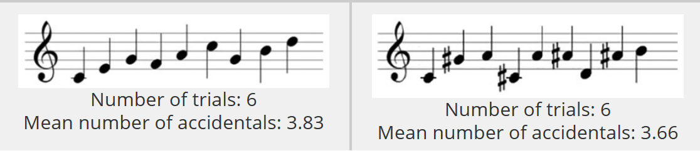

A composer needs to make their pieces memorable so that they become better known. Obviously we can't expect listeners to memorize an entire 5 minute piece when they first listen to it, let alone a 1 hour symphony, because our working memory capacity is limited in the amount of time information is held there before it moves to long-term memory or it gets lots, as well as in its capacity, as working memory stores an average of 7 bits of information (Lecture 4).
How do we remember things in the first place? According to the dual-store model of memory, information must first pass through the sensory register, which is the "thing" that takes in a ton of information from our senses and holds this information for just a couple of seconds (Lecture 4). However, because there is so much information that hits the sensory register at once, only important information is able to move on to working memory, where it will be processed and worked with. Such information is information that we have paid attention to. Many factors influence how much we pay attention to things in our environment and composers take advantage of that in their pieces to keep their listeners engaged, which is dicussed in details here. However, the composer is not the only one who controls a listener's attention: the listeners themselves should also be motived to attend to a piece in order for them to enjoy it. If they are motivated and interested in engaging with the music, then they will pay more attention to it and therefore, the piece will more likely be remembered. If you don't enjoy classical music, then you probably won't be motivated to listen to classical music and therefore, you will probably not remember classical music pieces as well as a classical music nerd.
Because our working memory has a limited capacity, we can use strategies such as chunking to increase the amount of information per bit so that we can remember more information. Chunking involves combining information in a way that makes it easier to encode (for instance, chunking information in categories, using mnemonics). Music is often naturally chunked in various ways: notes are chunked in bars whose length depends on the time signature and larger sections are delineated by double barlines. I often see melodies chunked in 4 or 8 bars. In a study conducted by Lörch (2022), participants listening to tonal melodies tended to group notes by melodic sequence along with a label to help identify the melody to help them remember the piece. Furthermore, melodies with a clear key will be better remembered than those that are atonal or that break conventions of writing melodies in a certain key. Melodic contour (how the notes go up and down) is also a way to chunk melodies (McAdams, 2022). Having melodies chunked this way can trigger better recall for the subsequent notes of the melody.
For information to then move from working memory to long-term memory, we need to form deep connections with knowledge already stored in long-term memory and the new incoming information (Lecture 4). This is why compositions that elicit emotions or tie into the composer's or listener's personal experiences are very powerful, as described in the emotions and attention sections.
Even though rote memorization and maintenance rehearsal will not necessarily make information stick in long-term memory, Ormrod (2017) claims that constantly reviewing can help keep information that is already encoded in long-term memory stay there longer, especially if the information is reworked and connected with other information. Rote memorization might make retrieval of this memory more fluent and automatic. Composers might take advantage of this by repeating an idea or melody over and over again. Consider this piece: We automatically know this theme (even though maybe not by name), which is the theme of fate, and one reason might be because it is constantly repeated throughout the entire piece at various points. Furthermore, another reason why we know this theme is because it is overplayed everywhere! So in a way, there is this cycle of having a memorable melody that is overplayed, which reinforced the fact that it is memorale.